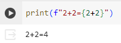
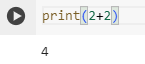

print(): Mathematical Operations


Mathematical operations can also be preformed inside print statements. In the first image, we see that we can preform mathematical operations inside the {} of an f-string. As you see, the {2+2} is calculated and simplified to 4. Then, the output reads “2+2=4”, which is exactly the part that we want the viewer to see. In the second image, it is entirely mathematics and numeric values. There are no strings and so we don’t have to tell Python that it is an integer, it just assumes that since there are no quotations, mathematics will be preformed. As intended, our output is only 4, which is exactly what we wanted.
Exit
Next
Back